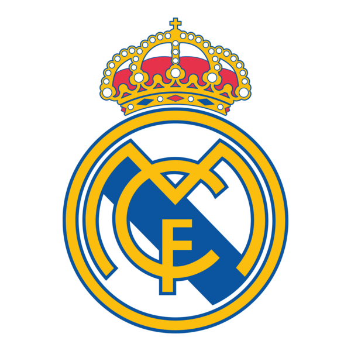

l Real Madrid Club de Fútbol, conosciuto semplicemente come Real Madrid, è una società calcistica spagnola con sede nella città di Madrid. Milita in Primera División, massima serie del campionato spagnolo di calcio. Fondato nel 1902 con la denominazione ufficiale di Madrid Club de Fútbol, si vide assegnare il titolo di Real nel 1920 dal re Alfonso XIII di Spagna, insieme alla nota corona a decorarne lo stemma. Militante in Primera División dalla prima edizione del torneo (stagione 1928-1929), può vantare il palmarès più titolato al mondo nelle competizioni internazionali. A livello internazionale è la prima squadra al mondo per numero di titoli ufficiali vinti, 35, di cui 33 nelle competizioni confederali e interconfederali. Nella bacheca del club complessivamente figurano: 15 Coppe dei Campioni/UEFA Champions League (record), 2 Coppe UEFA, 2 Coppe Latine (record condiviso con Barcellona e Milan), 6 Supercoppe UEFA (record), 3 Coppe Intercontinentali (record condiviso con Milan, Peñarol, Nacional e Boca Juniors), 5 Coppe del mondo per club (record), una Coppa Intercontinentale FIFA (record condiviso con il Paris Saint-Germain), e una Coppa Iberoamericana (record). Detiene il primato di affermazioni totali (15) e consecutive (5, dall'edizione inaugurale 1955-1956 a quella 1959-1960) in Coppa dei Campioni/UEFA Champions League.
Clicca il logo per tornare indietro